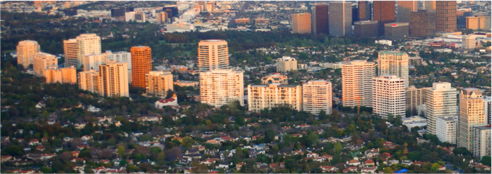
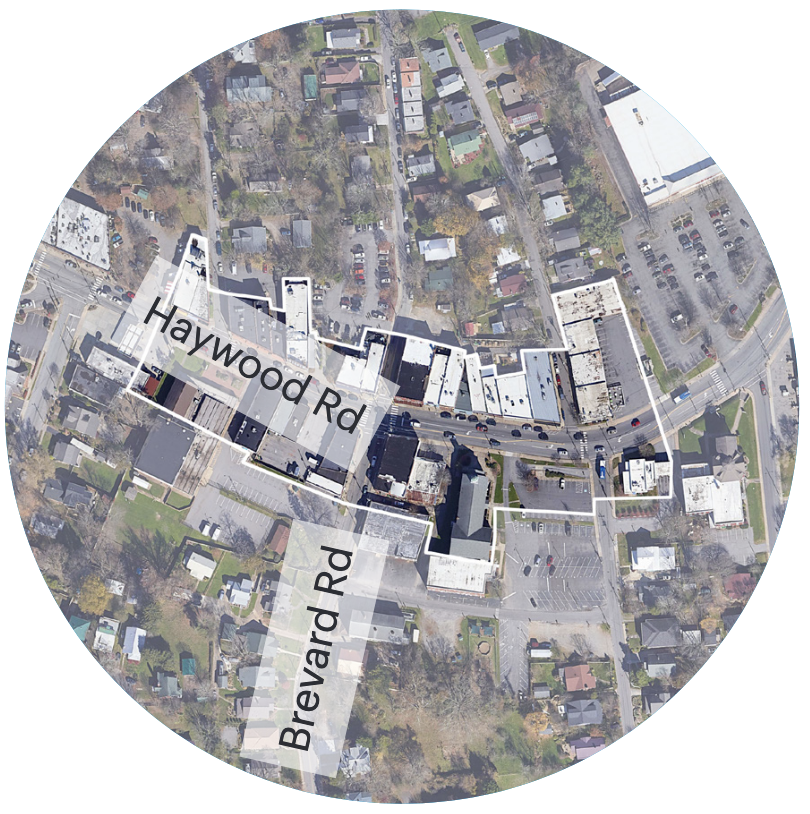
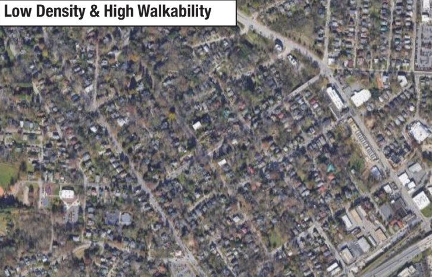
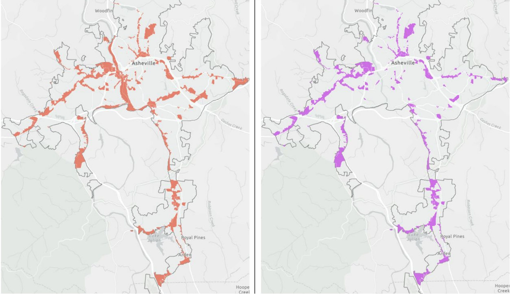

Corridor Housing Is Great, But It’s Not Enough
December 3, 2025
This member commentary post does not necessarily reflect the views of Asheville For All or its members.
When I was a young college dropout, my brother and I moved from Boston to Austin, Texas on a whim together. I got a full time job working at a record store on the “drag”, a nice strip of stores adjacent to the University of Texas, close to downtown.
I took the bus from our apartment building, which like a lot of apartments built throughout the South in the past half century, including those outside of Asheville’s core, was not terribly exciting from a livability perspective. These kinds of apartment buildings are usually built off of a highway or a “stroad” (a multi-lane road with fast-moving traffic that also has lots of drivers entering and exiting businesses). And they don’t really feel like they’re part of a neighborhood or place.
One day a very hip co-worker invited me to a party at her home. Bursting with pride, she told me that her apartment was, in fact, “a duplex.”
“A duplex?” I asked. “What’s that?”
“Oh, it’s way cooler than a regular apartment,” she said. “It looks like a house.”
Her apartment, located close to downtown in one of Austin’s older neighborhoods, was in fact very cool. I couldn’t even figure out how you get such a place. These kinds of rentals weren’t on “apartments.com”, which was the only place I knew to look for housing.
After six years of living in Austin, I never did manage to live in a duplex. I guess I just wasn’t hip enough!
“Missing Middle” vs. “Commercial Corridors”
Asheville For All is marking the two year anniversary of the Asheville Missing Middle Housing Study by highlighting the need for the city to begin implementing the recommendations that the study laid out. This study calls for allowing more duplexes and similar neighborhood-scale apartments to be built in our neighborhoods. These homes are not only hip, but also play an important part in meeting working people’s housing needs.
Sometimes we hear an argument against such recommendations, and they go something like this.
We absolutely do need infill housing in Asheville. But everyone will benefit if that housing is located on the main roads—the “commercial corridors”, aka “transit-supportive corridors.” This is different from “missing middle,” which allows lower-scale infill throughout our core neighborhoods, on main streets and side streets alike.
The idea being expressed here is that if we’re going to add residential density to the city, it might as well be on the main roads where one might find it easier to walk to amenities like schools, grocery stores, restaurants, coffee shops,workplaces, and bus stops.
We’ve heard this from at least a couple of city councilors over the past two years. And it’s become an even more convenient argument since Asheville City Council did pass some positive amendments to the city’s land use code on March 11th of this year, amendments that should incentivize more housing on corridors. The work, it would seem, is done!
Admittedly, corridor housing is an attractive idea to those who see the need to reduce car-dependency and enhance livability. Depending on a car to get around means higher carbon emissions, and it also means spending a lot of money just to get around.
And to be clear, the corridor housing that these folks are talking about is not the kind that I lived in while in Austin. The plan for Asheville’s corridor housing that went into effect this March is for more kinds of buildings that interact better with the street and promote walkability. Think about the apartments on Haywood Road in West Asheville, across the street from the library and fire department. Or the new apartments on the west edge of downtown on Patton Avenue.
(March’s approved changes don’t foreclose more suburban style apartments on corridors like Brevard Road or Hendersonville Road. That’s OK, we need housing everywhere. The changes do offer some good incentives to promote smarter infill, generally speaking.)
Focusing on corridors is also an attractive idea for the more conservative anti-housing crowd. To the extent that such people would be OK with more housing anywhere in the city, they tend to be more agreeable if they know that their residential neighborhood, off of the main roads, will remain apartment-free.
There’s just one problem—theory and evidence increasingly show that relying solely on the development of housing on corridors isn’t working very well in a lot of places.
The Grand Bargain
The idea that corridors are for apartments and the neighborhoods in-between are for single-family homes is sometimes given a name: “the grand bargain.”
As I’ve suggested above, it’s a compromise that seeks to make everyone happy. City leaders and planners get to have their cake and eat it too. Residential neighborhoods remain homogenous, but housing becomes less scarce. Angry long-time homeowners don’t yell at city council meetings. (Maybe.)
I like to point out that the “grand bargain” has its critics across the political spectrum. For Jacobin magazine, the issue is class segregation, with the wealthy gaining by restraining working people’s choices and artificially inflating land values. For Strong Towns too, it’s a rigged geographic market where keeping change away from some people only means that “radical change” will be foisted on others.

The grand bargain may have made certain sense in a certain place and at a certain time. Here and now, it seems woefully inadequate. In brief, here are some arguments against a grand bargain for Asheville.
Less Segregation and Less Land Value Pressure
It’s no secret that the very creation of single-family only neighborhoods was driven by segregationist intent. Further, it’s readily apparent that such segregation has led to higher housing costs for people of all backgrounds.
To some extent, allowing more housing on corridors within Asheville will alleviate such segregation, that is, if one is looking at a regional scale. Someone unable to find a home in a core neighborhood may still find it relatively easier to find a home on a corridor.
But you’re still going to be left with homogenous enclaves. We know that neighborhood segregation breeds undesirable cultural effects. (To put it delicately, it tends to make people insensitive to a city’s greater needs.) It also means diminished opportunities, say, for a family that wants to live near an elementary school in the Asheville city school district.
There’s a bigger problem with limiting the ability of residential neighborhoods to grow. It means that all of the growth demand pressure is placed on our commercial corridor parcels, which are much fewer in number than those parcels in our core neighborhoods.
Recently, housing policy expert, activist, developer, and indefatigable poster Mike Eliason commented on the effect of this on social media. Criticizing Seattle’s version of the “grand bargain,” he called it “urban cannibalism,” and pointed out that Seattle was reviewing a project whereby a three-story apartment building would be demolished in order to build a five-story one in the same place. If the only places that become available for more housing density are the places that already allow multifamily housing, the city has to cannibalize itself.
Cannibalization may hurt housing or businesses. The always thoughtful—and resolutely pro-housing—analyst and activist Darrell Owens nevertheless recently expressed concerns about a potential pro-housing corridor package for the west side of San Francisco, which is notoriously anti-housing in its neighborhoods, noting that the proposed changes could impose undue pressure on incumbent businesses on those corridors.
The potential effect on incumbent businesses aside, Jacobin’s Alex Hemingway explains the effect on housing costs:
In limited areas where apartment housing is allowed, . . . developers of new housing—nonmarket and market alike—have to compete for scarce parcels, driving up land purchase prices. As a result . . . exclusionary zoning artificially increases land prices for the sites where apartments are allowed by keeping them scarce.
There is simply no way that our corridors can absorb all of the housing demand in Asheville. This means that new housing on corridors—though it is very necessary and welcome—will be more expensive than if more parts of the city were opened up to modest housing growth. We might also note that such corridor land is by its nature more expensive than that on side streets, because of its potential value for a variety of uses. That means that if construction costs were equal, a new multifamily home in a neighborhood would likely be less expensive than that on a corridor.
Smaller Can Be Quicker
A recent essay about the Pacific Northwest, where the “grand bargain” is known to reign in Seattle and Vancouver BC, puts the problem this way:
The Grand Bargain promises new homes. Just not built quickly, or in the nicest places, or at the lowest cost. It’s an attempted sleight of hand by civic leaders: they promise greater access to nice homes in desirable neighborhoods, but they deliver large apartment buildings, slowly, on just 10 percent of the city’s land.
The article is called “To Build Fast, Think Small.”
Needless to say, building fast is good. We need housing yesterday. Researchers Gregg Colburn and Clayton Aldern, who famously declared that “homelessness is a housing problem,” sum up their research by saying that homelessness correlates with housing supply inelasticity. “Elasticity” just means responsiveness. The quicker that a market can respond to people’s needs, the more elastic that market is. (By contrast, the more inelastic a market is, the more middle-men and rent-seekers can profit from imposed scarcity.)
“Missing middle” style housing is quicker to build than the larger projects that one finds on commercial land—that is, on the transit-support corridors. Factors including land assembly, design, permitting, and construction all become more complicated when apartments go above three stories and/or include more homes in them.
Smaller can also be cheaper. Given that land values are higher on commercial corridors, as noted above, this means that larger buildings may be required on those parcels in order for the projects to make financial sense. (Generally speaking, for financing purposes, higher land values dictate that builders must create more expensive or more economically productive structures.) With concrete and steel in the mix, maybe you can get more impressive buildings and maybe even nicer homes, and these can play a part in the city’s overall housing needs. But they’re likely to be more expensive to purchase or rent, especially when they’re newly built.
More Destinations and Origins for Transit Stops
Let’s return to the original criticism of “missing middle” neighborhood reforms, which is so often centered around the language of transit needs.
Maybe it’s not obvious: you don’t need to live on a commercial corridor to take a bus. It’s not uncommon for transit riders in any city to walk five or ten minutes to their bus stop. If you assume a ten minute walk moves you a half a mile, you can imagine a map where bus stops are “nodes” with half-mile-wide circles around them. The map would cover an astonishing number of lots that are considered parts of a neighborhood rather than on a corridor. Any of these lots can be “origins” or “destinations”—places that make public transit ridership necessary and viable.

Let’s be less abstract. I live in a West Asheville neighborhood. If I walk ten minutes to my north, I hit a W1 bus stop. And if I walk less than ten minutes to my east, I hit a W2 bus stop. My position inside of a core neighborhood makes me just as able to catch a bus as anyone on a corridor, who might only have access to one bus route rather than two!
It’s not hard to imagine places where infill housing could provide transit demand. Think about the Five Points neighborhood around Harris Teeter. Think about the area just behind the West Asheville apartments that I mentioned above—walkable to Aldi and Lucy Herring Elementary.
Asheville’s recent Comprehensive Operational Analysis of its bus system says as much. Page 35 of the project’s “Choices Report,” released last summer, notes that core residential neighborhoods like Montford may currently have low residential density, but also have great potential to become more “transit-oriented” due to their grid-like pattern and proximity to downtown.

Flood Zones and Buffers
I don’t want to spend a lot of time addressing potential shortcomings of the March 11th corridor amendments. Again, I think these amendments were overall big improvements. Here’s just a couple of points:
First, we should acknowledge that these amendments would have had a greater impact before Hurricane Helene. Now, with flood maps and policies updated, several commercial nodes or corridors that we had previously thought could transform into housing-rich areas—the River Arts District in particular—are now unlikely to see new housing. This is no one’s fault! But if the city’s prime corridor candidates for housing are now not really as viable, it has to mean becoming more open to other alternatives.

Second, if the March 11th corridor amendments has one achilles heel, it might be the continued existence of onerous “buffers” in our zoning code. Our zoning code describes buffers as being intended to
provide a transition between dissimilar zoning districts to protect abutting properties from potential negative impacts of neighboring development, particularly between residential-commercial interfaces, and to preserve the character and value of a property and provide a sense of privacy[.]
Buffers are strips of land, on the side(s) and/or back of a lot, mandated to consist of trees and shrubs, at a certain density of plantings. The idea is that they act like a kind of “screen” as the plants mature.
My understanding is that if you have a vacant lot to be developed, say on Merrimon Ave., where a new building might go, but there are residential-zoned lots just behind the building, then the existing buffer requirements might make such a mixed-use project impossible to build.
From what I can tell, such a lot would require a twenty-foot wide buffer—no parking spaces or driveways, not even a picnic or playground area, just a mandated density of trees—even if the new building on Merrimon Ave. were to include only residential use.
(Incidentally, the city’s “missing middle implementation team” was apparently considering comprehensive reforms to the city’s buffer policy, reforms which would have aided both corridor and neighborhood housing infill, before the missing middle initiative was effectively put on ice.)
Let’s Walk and Chew Gum at the Same Time
Asheville For All had some concerns with some of the details of the commercial corridor amendment package that passed City Council on March 11th, but quibbles aside, we should celebrate the transformations that we might soon see in town. And we should applaud the city leaders, staff, and Planning and Zoning commissioners that saw those changes through.
But we can walk and chew gum at the same time. We can recognize that when we have the option to do multiple good things, that’s better than doing one good thing!
I live in a townhome now, inside of a residential neighborhood, where I can walk with my family to shops and restaurants and parks. I still think it would be cool to live in a corridor condo someday—maybe just as hip as living in a duplex. (I have a brother who raised his kids for a time in a high-rise in Long Island City, Queens, and it looked like a lot of fun!) To solve our housing shortage, to give people options, to reduce economic segregation, to reduce “vehicle-miles-traveled” in single occupancy vehicles, and to make transit more viable, we need to make both kinds of living more common: that on our core corridors and that in our core neighborhoods. We need our city leaders to pass some “missing middle” reforms.
This member commentary post does not necessarily reflect the views of Asheville For All or its members.